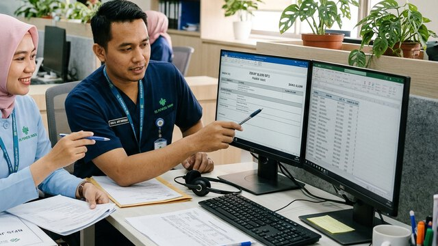
Berkas klaim BPJS dikumpulkan manual dari poli, lab, dan farmasi — sering kurang lengkap dan dikembalikan.
Dengan KlikSIMRSResume, hasil penunjang, dan koding INA-CBG terkumpul otomatis per SEP. Casemix tinggal verifikasi.
Dari pendaftaran, IGD, rawat inap, hemodialisa, hingga klaim BPJS dan laporan direksi — KlikSIMRS menyatukan data pasien, tindakan, dan tagihan agar tim RS bekerja lebih cepat dan klaim lebih rapi.
Dibangun oleh tim KLIKMEDIS — dipercaya lebih dari 450 fasilitas kesehatan · Terhubung dengan layanan kesehatan nasional

Berkas klaim BPJS dikumpulkan manual dari poli, lab, dan farmasi — sering kurang lengkap dan dikembalikan.
Dengan KlikSIMRSResume, hasil penunjang, dan koding INA-CBG terkumpul otomatis per SEP. Casemix tinggal verifikasi.
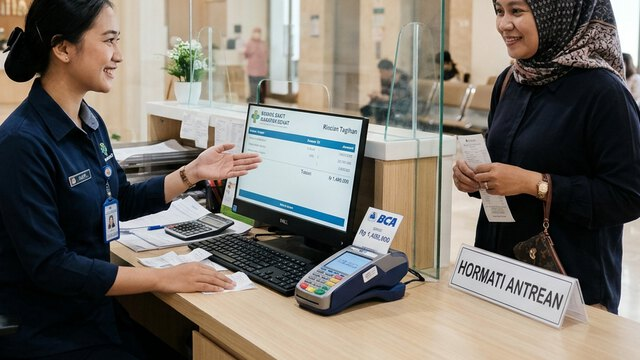
Tagihan pasien baru dihitung saat pulang, tindakan terlewat, dan pendapatan bocor.
Dengan KlikSIMRSSetiap tindakan, obat, dan alkes langsung masuk billing. Kasir melihat tagihan real-time.
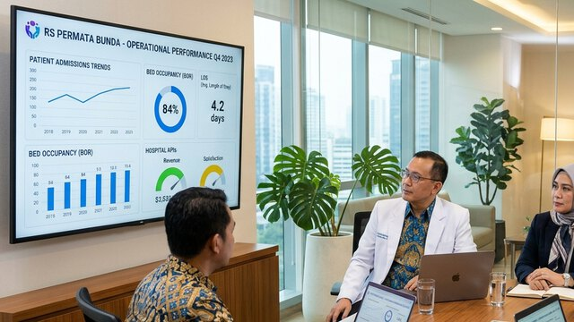
Laporan RL dan indikator BOR/LOS direkap tiap akhir bulan di spreadsheet.
Dengan KlikSIMRSDasbor direksi dan laporan SIRS tersusun dari data harian — tersedia kapan saja.
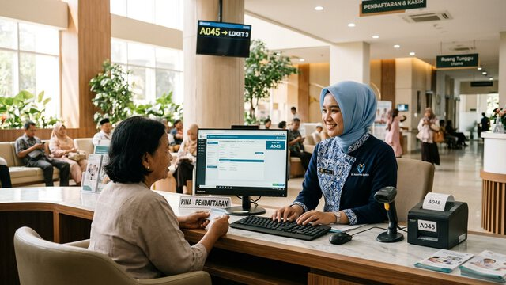
Pendaftaran rawat jalan, IGD, dan rawat inap; terhubung antrean online Mobile JKN.
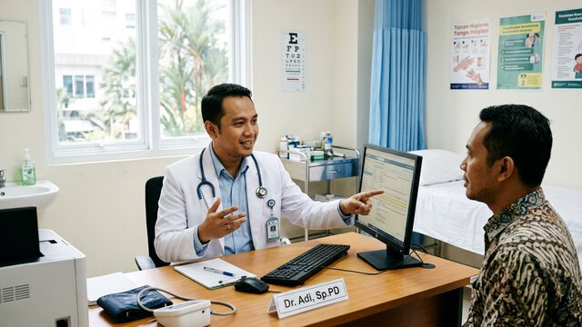
Asesmen, CPPT, diagnosa ICD-10, resep, dan order penunjang dari satu layar dokter.
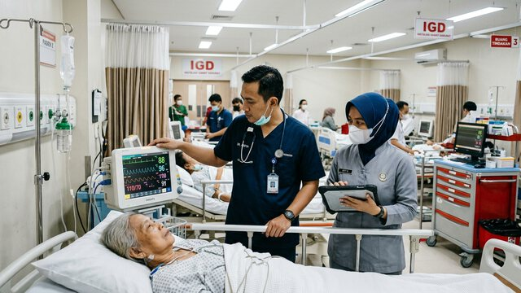
Triase, observasi, dan tindakan cepat dengan alur ke rawat inap atau rujukan.
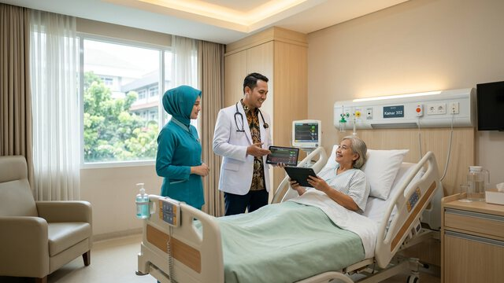
Manajemen bed, visite dokter, asuhan keperawatan, dan transfer antar ruangan.
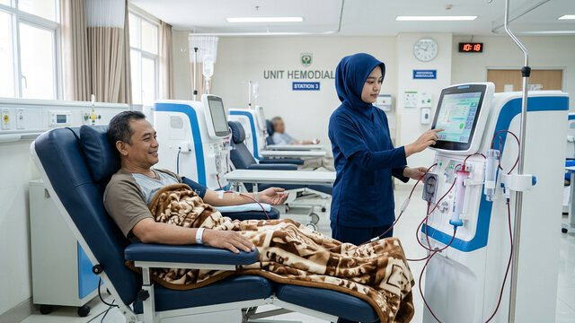
Jadwal HD, asesmen perawat, pemeriksaan dokter, dan paket iterasi otomatis.
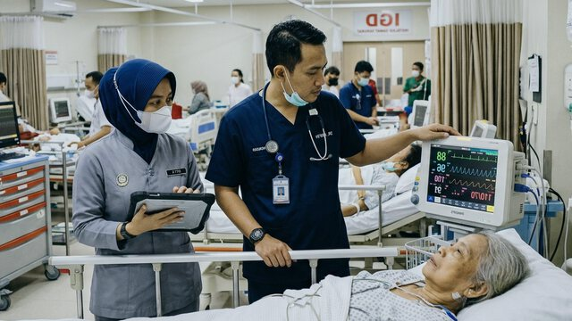
Penjadwalan operasi, laporan anestesi, dan checklist keselamatan pasien.
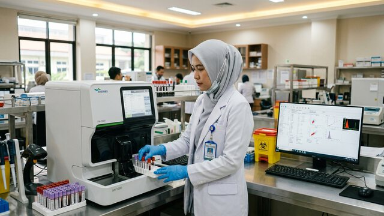
Order dari poli dan bangsal, input hasil, nilai kritis, siap bridging LIS.
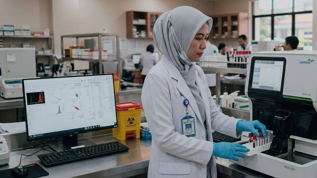
Order pemeriksaan, expertise dokter radiologi, siap integrasi PACS.
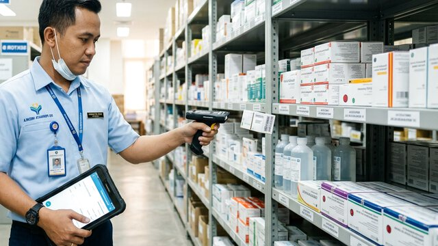
Resep elektronik, telaah resep, stok per depo, dan obat kronis BPJS.
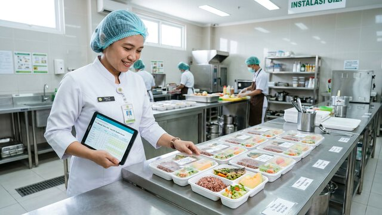
Order diet pasien rawat inap dan distribusi makanan per ruangan.
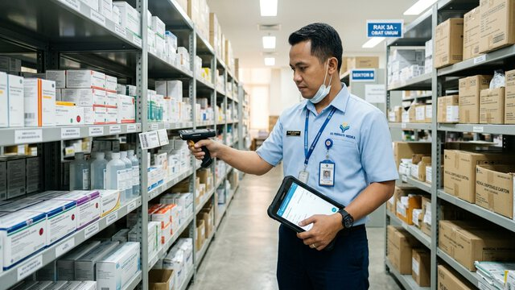
Pengadaan, mutasi barang, stok opname, dan kartu stok alkes.
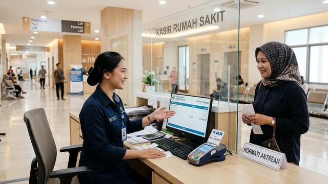
Tagihan real-time per tindakan, deposit pasien, dan pelunasan.
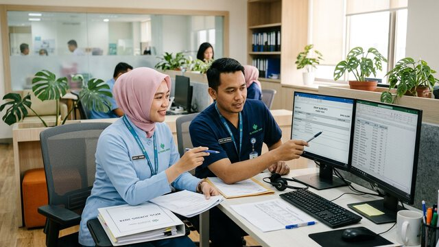
SEP VClaim, koding INA-CBG, dan berkas klaim terkumpul otomatis.
Jurnal otomatis dari setiap transaksi layanan dan laporan keuangan.
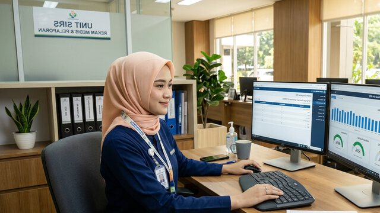
Formulir RM terstruktur, e-dokumen, dan tanda tangan elektronik.
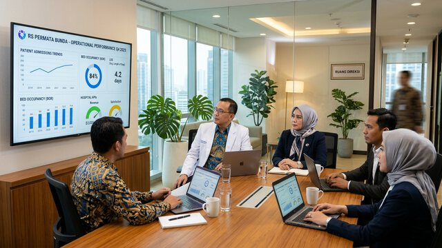
BOR, LOS, TOI, kunjungan, dan pendapatan dalam satu dasbor.
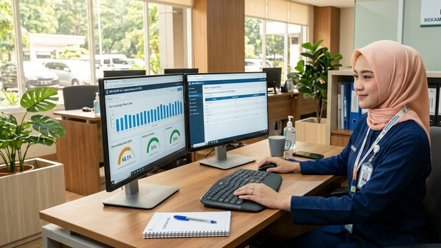
Laporan RL tersusun dari data harian, tanpa rekap manual.
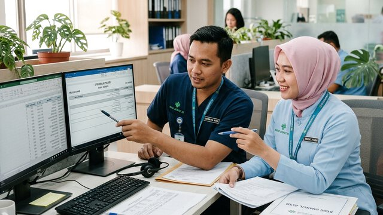
Jadwal dinas, absensi, dan penggajian tenaga RS.
Pasien hemodialisa datang berulang setiap minggu. KlikSIMRS mencatat setiap sesi dalam satu alur dan menghitung paket iterasi secara otomatis.
Jadwal sesi rutin dan pembagian bed per shift.
Tanda vital pra-HD, berat badan kering, dan akses vaskular.
Instruksi HD, resep, dan tindakan tercatat di RME.
Kuota paket berkurang saat dokter menginput tindakan iterasi — tanpa hitung manual.
Tampilan ilustrasi. Data pasien bersifat contoh.
Layar dokter, perawat, dan kasir mengikuti alur kerja nyata di poli, IGD, dan bangsal.
SATUSEHAT, VClaim, E-Klaim, dan antrean online Mobile JKN dalam satu sistem.
Billing real-time, kontrol klaim, dan jurnal otomatis lewat add-on KlikAkuntansi.
Hak akses per peran, log aktivitas, dan backup rutin untuk data rekam medis.
Tim support via WhatsApp dan tiket, dengan pendampingan on-site saat go-live.
Mulai dari modul inti, tambah modul atau kustomisasi saat RS berkembang.
Survei unit layanan, tarif, dan formulir RM yang dipakai saat ini.
Master data, tarif, dan data pasien lama dipindahkan ke KlikSIMRS.
Sesi untuk dokter, perawat, farmasi, kasir, dan casemix.
Tim standby di RS pada minggu pertama, lalu support berkelanjutan.
Untuk RS Tipe D & RS baru
[HARGA]
Untuk RS Tipe C
[HARGA]
Untuk RS Tipe B & grup RS
Hubungi tim
“Sejak beralih ke KlikSIMRS, pengumpulan berkas klaim BPJS dari poli, penunjang, hingga farmasi tidak lagi tercecer. Tim casemix kami bisa menyelesaikan verifikasi SEP dan E-Klaim INA-CBG jauh lebih cepat setiap bulannya.”
“Fitur paket iterasi otomatis di modul Hemodialisa sangat membantu perawat kami. Jadwal pasien rutin, asesmen pra-HD, sampai sisa kuota sesi langsung terpotong otomatis saat dokter menginput tindakan tanpa rekap manual.”
“Integrasi RME dengan SATUSEHAT dan laporan RL SIRS Kemenkes berjalan stabil dari data pelayanan harian. Proses migrasi data lama dan pendampingan tim support saat go-live juga sangat responsif.”
Umumnya [DURASI] minggu, tergantung tipe RS dan jumlah modul. Tim kami mendampingi dari pemetaan alur, migrasi data, pelatihan, hingga go-live.
Ya. KlikSIMRS mengirim data ke SATUSEHAT dan terhubung dengan VClaim, E-Klaim INA-CBG, serta antrean online Mobile JKN.
Bisa. Data pasien, master tarif, dan riwayat kunjungan dapat dimigrasi setelah kami melakukan pemetaan struktur data lama.
[Sesuaikan: cloud, on-premise, atau keduanya] — pilihan menyesuaikan kebijakan TI dan kondisi jaringan rumah sakit.
Support melalui WhatsApp dan sistem tiket, dengan nomor laporan untuk setiap kendala, serta kunjungan on-site bila diperlukan.
Demo 45 menit bersama tim kami — kami tunjukkan modul yang paling relevan untuk tipe dan unit layanan RS Anda.